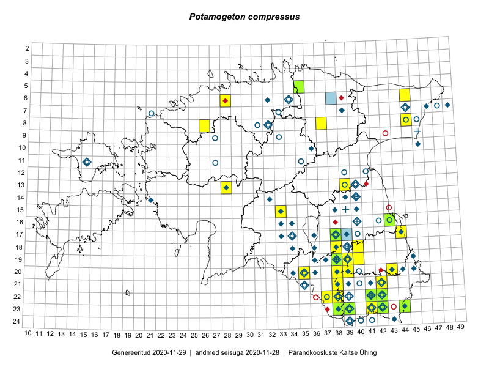

Potamogeton compressus — lapik penikeel
Potamogetonaceae :: Potamogeton compressus L. (219); Potamogeton zosteraefolius (1)

Kaart põhineb 223 kirjel:
vaatlusi 16
herbaareksemplare 204
PKÜ kirjeid1 1
ELFi kirjeid2 2
Taime kaasaegsed ja ajaloolised leiukohad asuvad 73 ruudus.
Tingmärgid ja leidudega ruutude arvud periooditi uues (u) ja 2005 andmestikus (v)
| █ | vahemik | u3 | v4 |
|---|---|---|---|
| █ | 2006–2020 | 19 | – |
| ◆/◇ | 1971–2005 | 47 | 54 |
| ○ | 1921–1970 | 31 | 11 |
| + | kuni 1920 | 5 | 0 |
| × | hävinud | – | 0 |
| ? | kaheldav | – | 0 |
| Ruut | Leidja(d) | Leiuaeg | Kirje |
|---|---|---|---|
| 17-39 | Silvia Pihu | 2020-08-16 | ELF: 706 |
| 16-43 | Peedu Saar | 2019-06-07 | TAA0149528: Potamogeton compressus L. |
| 16-43 | Peedu Saar | 2019-06-07 | TAA0149529: Potamogeton compressus L. |
| 20-39 | Ilmar Uibopuu, Marko Vainu, Kadri Kuusksalu | 2018-07-14 | ruut/ala: Potamogeton compressus L. |
| 05-35 | Tõnu Feldmann, Katrit Karus | 2017-08-10 | TAA0144455: Potamogeton compressus L. |
| 05-35 | Katrit Karus, Tõnu Feldmann | 2017-08-10 | ruut/ala: Potamogeton compressus L. |
| 23-39 | Ott Luuk, Peedu Saar | 2017-07-27 | TAA0142766: Potamogeton compressus L. |
| 17-44 | Helle Mäemets, Kadi Palmik | 2017-07-25 | punkt: Potamogeton compressus L. |
| 08-26 | Helle Mäemets, Kadi Palmik | 2017-07-16 | ruut/ala: Potamogeton compressus L. |
| 21-38 | Helle Mäemets, Kadi Palmik | 2017-07-07 | ruut/ala: Potamogeton compressus L. |
| 08-45 | Tõnu Feldmann, Katrit Karus | 2017-07-06 | ruut/ala: Potamogeton compressus L. |
| 18-40 | Helle Mäemets, Kadi Palmik | 2017-07-05 | ruut/ala: Potamogeton compressus L. |
| 23-44 | Peedu Saar, Karin Kikas | 2016-08-19 | TAA0134004: Potamogeton compressus L. |
| 17-44 | Helle Mäemets, Kadi Palmik | 2016-08-04 | punkt: Potamogeton compressus L. |
| 05-35 | Peedu Saar, Liina Oja, Susanna Vain | 2016-07-27 | TAA0134013: Potamogeton compressus L. |
| 17-44 | Helle Mäemets, Kadi Palmik | 2015-07-27 | punkt: Potamogeton compressus L. |
| 19-40 | Malle Leht | 2015-05-16–2015-05-22 | ruut/ala: Potamogeton compressus L. |
| 22-42 | Helle Mäemets | 2011-07-21 | TAA2004058: Potamogeton compressus L. |
| 22-42 | Helle Mäemets | 2011-07-21 | TAA2004059: Potamogeton compressus L. |
| 23-42 | Helle Mäemets | 2011-07-20 | TAA2004144: Potamogeton compressus L. |
| 23-38 | Helle Mäemets | 2011-07-13 | TAA2004103: Potamogeton compressus L. |
| 19-38 | Helle Mäemets | 2011-06-30 | TAA2004614: Potamogeton compressus L. |
| 06-38 | Jaan Spiegel | 2010-10-13 | ELF: 17632 |
| 17-38 | Helle Mäemets | 2010-07-01 | TAA2004556: Potamogeton compressus L. |
| 22-41 | Lilian Freiberg | 2007-07-09 | TAA2002454: Potamogeton compressus L. |
| 07-47 | Toomas Kukk | 2004-07-27 | TAA0109670: Potamogeton compressus L. |
| 07-47 | Toomas Kukk | 2004-07-27 | TAA0109671: Potamogeton compressus L. |
| 07-47 | Toomas Kukk | 2004-07-27 | TAA0109672: Potamogeton compressus L. |
| 07-47 | Toomas Kukk | 2004-07-27 | TAA0109673: Potamogeton compressus L. |
| 07-47 | Toomas Kukk | 2004-07-27 | TAA0109674: Potamogeton compressus L. |
| 24-39 | Aime Mäemets | 2004-07-27 | TAA0109679: Potamogeton compressus L. |
| 24-39 | Aime Mäemets | 2004-07-27 | TAA0109680: Potamogeton compressus L. |
| 24-39 | Aime Mäemets | 2004-07-27 | TAA0109681: Potamogeton compressus L. |
| 18-34 | Helle Mäemets | 2004-07-19 | TAA2002318: Potamogeton compressus L. |
| 07-45 | Helle Mäemets | 2003-08-12 | TAA2002261: Potamogeton compressus L. |
| 18-38 | Bjarne Moeslund | 2003-08-08 | TAA2001942: Potamogeton compressus L. |
| 18-38 | Helle Mäemets | 2002-06-17 | TAA2002175: Potamogeton compressus L. |
| 20-45 | Helle Mäemets | 2001-08-06 | TAA2002191: Potamogeton compressus L. |
| 20-45 | Helle Mäemets, Lilian Freiberg | 2001-08 | ruut/ala: Potamogeton compressus L. |
| 10-46 | Helle Mäemets | 2000-07-24 | TAA2001969: Potamogeton compressus L. |
| 22-38 | Helle Mäemets | 2000-07-06 | TAA2001998: Potamogeton compressus L. |
| 22-38 | Helle Mäemets | 2000-07-06 | TAA2003017: Potamogeton compressus L. |
| 22-38 | Helle Mäemets | 2000-07-06 | TAA2003018: Potamogeton compressus L. |
| 22-38 | Helle Mäemets | 2000-07-06 | TAA2004095: Potamogeton compressus L. |
| 19-38 | Helle Mäemets | 1999-10-04 | TAA2003015: Potamogeton compressus L. |
| 15-16;16-16 | Toomas Kukk, Peter Veen, Andres Luhamaa, Eerik Leibak | 1999-07-19 | PKÜ: 1159 |
| 17-44 | Helle Mäemets | 1998-08-07 | TAA2002602: Potamogeton compressus L. |
| 19-38 | Helle Mäemets | 1998-07-28 | TAA2001092: Potamogeton compressus L. |
| 19-38 | Helle Mäemets | 1998-07-28 | TAA2001106: Potamogeton compressus L. |
| 19-38 | Helle Mäemets | 1998-07-28 | TAA2001107: Potamogeton compressus L. |
| 17-34 | Helle Mäemets | 1998-07-15 | TAA2003551: Potamogeton compressus L. |
| 22-39 | Aime Mäemets | 1993-08-17 | TAA2002462: Potamogeton compressus L. |
| 17-38 | Aime Mäemets | 1991-07-03 | TAA2002470: Potamogeton compressus L. |
| 23-44 | Aime Mäemets | 1990-08-02 | TAA2002749: Potamogeton compressus L. |
| 23-44 | Aime Mäemets | 1990-07-25 | TAA2002748: Potamogeton compressus L. |
| 17-38 | Toomas Kukk | 1990-07-13 | TAA0109698: Potamogeton compressus L. |
| 06-34 | Aime Mäemets | 1990-07-06 | TAA2002716: Potamogeton compressus L. |
| 21-42 | Aime Mäemets | 1989-07-03 | TAA2003053: Potamogeton compressus L. |
| 07-39 | Aime Mäemets | 1988-07-03 | TAA2002015: Potamogeton compressus L. |
| 19-38 | Aime Mäemets | 1987-08-03 | TAA2001994: Potamogeton compressus L. |
| 19-36 | Aime Mäemets | 1986-07-01 | TAA2002578.A: Potamogeton compressus L. |
| 18-36 | Aime Mäemets | 1985-08-24 | TAA2002415.A: Potamogeton compressus L. |
| 17-38 | Aime Mäemets | 1985-07-29 | TAA2002725: Potamogeton compressus L. |
| 16-40 | Ülo Niinemets | 1985-07-12 | TAA0109702: Potamogeton compressus L. |
| 15-38 | Ülo Niinemets | 1985–1986 | ruut/ala: Potamogeton compressus L. |
| 19-45 | Ülo Niinemets | 1985–1986 | ruut/ala: Potamogeton compressus L. |
| 18-39 | Aime Mäemets | 1984-07-19 | TAA2002487: Potamogeton compressus L. |
| 19-39 | Aime Mäemets | 1984-07-17 | TAA2002435: Potamogeton compressus L. |
| 19-38 | Aime Mäemets | 1984-07-16 | TAA2002441: Potamogeton compressus L. |
| 21-38 | Aime Mäemets | 1984-07-08 | TAA2002761.A: Potamogeton compressus L. |
| 21-39 | Aime Mäemets | 1984-07-07 | TAA2002445: Potamogeton compressus L. |
| 21-39 | Aime Mäemets | 1984-07-06 | TAA2002423: Potamogeton compressus L. |
| 17-39 | Aime Mäemets | 1984-07-03 | TAA2002430: Potamogeton compressus L. |
| 21-42 | Aime Mäemets | 1983-07-04 | TAA2000788.A: Potamogeton compressus L. |
| 14-39 | Aime Mäemets | 1982-07-18 | TAA2000675.A: Potamogeton compressus L. |
| 18-38 | Aime Mäemets | 1982-01-27 | TAA2000743.A: Potamogeton compressus L. |
| 19-39 | Aime Mäemets | 1981-07-09 | TAA2002515.A: Potamogeton compressus L. |
| 21-42 | Aime Mäemets | 1981-07-07 | TAA2002504: Potamogeton compressus L. |
| 22-42 | Aime Mäemets | 1981-07-02 | TAA2002506: Potamogeton compressus L. |
| 22-42 | Aime Mäemets | 1981-07-02 | TAA2002521: Potamogeton compressus L. |
| 07-49 | Aime Mäemets | 1980-09-10 | TAA2001778: Potamogeton compressus L. |
| 23-42 | Taavi Tuulik | 1980-07-09 | TAA2002132: Potamogeton compressus L. |
| 22-42 | Taavi Tuulik | 1980-07-08 | TAA2002345: Potamogeton compressus L. |
| 22-42 | Taavi Tuulik | 1980-07-05 | TAA2002397: Potamogeton compressus L. |
| 23-42 | Taavi Tuulik | 1980-07-04 | TAA2002386: Potamogeton compressus L. |
| 23-42 | Taavi Tuulik | 1980-07-03 | TAA2002405: Potamogeton compressus L. |
| 23-42 | Taavi Tuulik | 1980-07-02 | TAA2002001.A: Potamogeton compressus L. |
| 23-42 | Taavi Tuulik | 1980-07-02 | TAA2002032: Potamogeton compressus L. |
| 23-42 | Taavi Tuulik | 1980-07-01 | TAA2002024: Potamogeton compressus L. |
| 23-42 | Taavi Tuulik | 1980-07-01 | TAA2002393: Potamogeton compressus L. |
| 23-42 | Taavi Tuulik | 1980-06-30 | TAA2002389: Potamogeton compressus L. |
| 16-34 | Aime Mäemets | 1979-07-13 | TAA2000602: Potamogeton compressus L. |
| 11-15 | Aime Mäemets | 1978-07-18 | TAA2000991: Potamogeton compressus L. |
| 19-38 | Aime Mäemets | 1977-08-01 | TAA2002080: Potamogeton compressus L. |
| 14-32 | Aime Mäemets | 1977-07-09 | TAA2002329: Potamogeton compressus L. |
| 14-40 | Aime Mäemets | 1975-08-19 | TAA2000056: Potamogeton compressus L. |
| 22-42 | Aime Mäemets | 1975-06-20 | TAA2000031: Potamogeton compressus L. |
| 19-39 | Aime Mäemets | 1974-07-23 | TAA0109688: Potamogeton compressus L. |
| 20-34 | Aime Mäemets | 1974-07-19 | TAA2000021.A: Potamogeton compressus L. |
| 20-34 | Aime Mäemets | 1974-07-19 | TAA2000022: Potamogeton compressus L. |
| 20-36 | Aime Mäemets | 1974-07-18 | TAA0109711: Potamogeton compressus L. |
| 21-35 | Aime Mäemets | 1974-07-18 | TAA2000018: Potamogeton compressus L. |
| 20-35 | Madis Mäemets | 1974-07-17 | TAA2000020: Potamogeton compressus L. |
| 20-36 | Madis Mäemets | 1974-07-17 | TAA2000023: Potamogeton compressus L. |
| 23-41 | Aime Mäemets | 1974-07-05 | TAA2000025.A: Potamogeton compressus L. |
| 20-35 | Aime Mäemets | 1973-08-10 | TAA2002409: Potamogeton compressus L. |
| 20-38 | Aime Mäemets | 1973-07-27 | TAA0109710: Potamogeton compressus L. |
| 20-38 | Aime Mäemets | 1973-07-27 | TAA2000053: Potamogeton compressus L. |
| 20-44 | Aime Mäemets | 1973-07-22 | TAA0109720: Potamogeton compressus L. |
| 23-42 | Aime Mäemets | 1973-07-21 | TAA0109724: Potamogeton compressus L. |
| 23-42 | Aime Mäemets | 1973-07-21 | TAA2002603: Potamogeton compressus L. |
| 23-42 | Aime Mäemets | 1973-07-17 | TAA2000024: Potamogeton compressus L. |
| 22-39 | Aime Mäemets | 1972-07-28 | TAA2000027: Potamogeton compressus L. |
| 17-34 | Aime Mäemets | 1972-07-27 | TAA0109715: Potamogeton compressus L. |
| 17-34 | Aime Mäemets | 1972-07-27 | TAA0109716: Potamogeton compressus L. |
| 17-34 | Aime Mäemets | 1972-07-27 | TAA0109717: Potamogeton compressus L. |
| 15-33 | Aime Mäemets | 1972-07-26 | TAA2000028: Potamogeton compressus L. |
| 19-38 | Aime Mäemets | 1972-07-23 | TAA0109695: Potamogeton compressus L. |
| 19-39 | Aime Mäemets | 1972-07-23 | TAA2000036: Potamogeton compressus L. |
| 19-38 | Aime Mäemets | 1972-07-23 | TAA2000037: Potamogeton compressus L. |
| 20-39 | Aime Mäemets | 1972-07-22 | TAA2000035: Potamogeton compressus L. |
| 20-38 | Aime Mäemets | 1972-07-20 | TAA0109690: Potamogeton compressus L. |
| 19-37 | Aime Mäemets | 1972-07-20 | TAA2000029: Potamogeton compressus L. |
| 19-38 | Aime Mäemets | 1972-07-20 | TAA2000030: Potamogeton compressus L. |
| 20-38 | Aime Mäemets | 1972-07-20 | TAA2000034: Potamogeton compressus L. |
| 07-39 | Merike Mäemets | 1972-07-07 | TAA2000026: Potamogeton compressus L. |
| 07-39 | Aime Mäemets | 1972-07-07 | TAA0109713: Potamogeton compressus L. |
| 22-42 | Aime Mäemets | 1971-07-23 | TAA2000045: Potamogeton compressus L. |
| 22-42 | Aime Mäemets | 1971-07-22 | TAA0109705: Potamogeton compressus L. |
| 22-42 | Aime Mäemets | 1971-07-22 | TAA2000050: Potamogeton compressus L. |
| 23-42 | Aime Mäemets | 1971-07-21 | TAA2000049: Potamogeton compressus L. |
| 20-45 | Aime Mäemets | 1971-07-09 | TAA2002601: Potamogeton compressus L. |
| 12-41 | Aime Mäemets | 1970-07-15 | TAA0109709: Potamogeton compressus L. |
| 12-41 | Aime Mäemets | 1970-07-15 | TAA2001074: Potamogeton compressus L. |
| 23-42 | Aime Mäemets | 1970-07-09 | TAA0109718: Potamogeton compressus L. |
| 23-41 | Aime Mäemets | 1970-07-08 | TAA0109677: Potamogeton compressus L. |
| 23-42 | Aime Mäemets | 1970-07-08 | TAA0109682: Potamogeton compressus L. |
| 23-42 | Aime Mäemets | 1970-07-08 | TAA0109683: Potamogeton compressus L. |
| 23-42 | Aime Mäemets | 1970-07-08 | TAA0109684: Potamogeton compressus L. |
| 23-42 | Aime Mäemets | 1970-07-08 | TAA0109685: Potamogeton compressus L. |
| 21-42 | Aime Mäemets | 1970-07-08 | TAA0109704: Potamogeton compressus L. |
| 23-42 | Aime Mäemets | 1970-07-08 | TAA0109722: Potamogeton compressus L. |
| 23-42 | Aime Mäemets | 1970-07-08 | TAA2000047: Potamogeton compressus L. |
| 23-42 | Aime Mäemets | 1970-07-08 | TAA2000048: Potamogeton compressus L. |
| 21-42 | Aime Mäemets | 1970-07-08 | TAA2000051: Potamogeton compressus L. |
| 22-42 | Aime Mäemets | 1970-07-08 | TAA2002634: Potamogeton compressus L. |
| 23-42 | 1970-07-08 | TAA2000052: Potamogeton compressus L. | |
| 23-42 | Aime Mäemets | 1970-06-09 | TAA2000033: Potamogeton compressus L. |
| 06-34 | Aime Mäemets | 1969-08-26 | TAA0109692: Potamogeton compressus L. |
| 06-34 | Aime Mäemets | 1969-08-26 | TAA0109719: Potamogeton compressus L. |
| 06-34 | Aime Mäemets | 1969-08-26 | TAA0109725: Potamogeton compressus L. |
| 06-34 | Aime Mäemets | 1969-08-26 | TAA2000057: Potamogeton compressus L. |
| 06-34 | Aime Mäemets | 1969-08-26 | TAA2000070: Potamogeton compressus L. |
| 17-34 | Aime Mäemets | 1968-08-23 | TAA0109712: Potamogeton compressus L. |
| 17-34 | Aime Mäemets | 1968-08-23 | TAA2000040: Potamogeton compressus L. |
| 19-39 | Aime Mäemets | 1968-08-22 | TAA0109686: Potamogeton compressus L. |
| 19-39 | Aime Mäemets | 1968-08-22 | TAA0109687: Potamogeton compressus L. |
| 21-35 | Aime Mäemets | 1968-08-22 | TAA0109706: Potamogeton compressus L. |
| 21-35 | Aime Mäemets | 1968-08-22 | TAA0109721: Potamogeton compressus L. |
| 19-39 | Aime Mäemets | 1968-08-22 | TAA0109731: Potamogeton compressus L. |
| 20-35 | Aime Mäemets | 1968-08-22 | TAA2000038: Potamogeton compressus L. |
| 21-35 | Aime Mäemets | 1968-08-22 | TAA2000039: Potamogeton compressus L. |
| 13-39 | Aime Mäemets | 1968-08-20 | TAA0109723: Potamogeton compressus L. |
| 13-39 | Aime Mäemets | 1968-08-20 | TAA2000043: Potamogeton compressus L. |
| 24-39 | Aime Mäemets | 1968-08-11 | TAA0109678: Potamogeton compressus L. |
| 23-39 | Aime Mäemets | 1968-08-11 | TAA2000065: Potamogeton compressus L. |
| 23-39 | Aime Mäemets | 1968-08-11 | TAA2000066: Potamogeton compressus L. |
| 23-39 | Aime Mäemets | 1968-08-11 | TAA2000067: Potamogeton compressus L. |
| 23-39 | Aime Mäemets | 1968-08-11 | TAA2000068: Potamogeton compressus L. |
| 23-39 | Aime Mäemets | 1968-08-11 | TAA2000069: Potamogeton compressus L. |
| 23-39 | Aime Mäemets | 1968-08-11 | TAA2002636: Potamogeton compressus L. |
| 23-39 | Aime Mäemets | 1968-08-09 | TAA0109693: Potamogeton compressus L. |
| 24-40 | Aime Mäemets | 1968-08-09 | TAA0109699: Potamogeton compressus L. |
| 24-40 | Aime Mäemets | 1968-08-09 | TAA0109700: Potamogeton compressus L. |
| 24-40 | Aime Mäemets | 1968-08-09 | TAA0109701: Potamogeton compressus L. |
| 24-41 | Aime Mäemets | 1968-08-09 | TAA2000059: Potamogeton compressus L. |
| 19-39 | Aime Mäemets | 1968-08-08 | TAA0109697: Potamogeton compressus L. |
| 19-39 | Aime Mäemets | 1968-08-08 | TAA2000058: Potamogeton compressus L. |
| 07-45 | Aime Mäemets | 1968-07-21 | TAA2000063: Potamogeton compressus L. |
| 07-45 | Aime Mäemets | 1968-07-20 | TAA0109694: Potamogeton compressus L. |
| 07-45 | Aime Mäemets | 1968-07-20 | TAA2000062: Potamogeton compressus L. |
| 07-45 | Aime Mäemets | 1968-07-18 | TAA2000064: Potamogeton compressus L. |
| 07-45 | Aime Mäemets | 1968-07-18 | TAA2002069: Potamogeton compressus L. |
| 22-38 | Aime Mäemets | 1968-07-17 | TAA0109714: Potamogeton compressus L. |
| 22-37 | Aime Mäemets | 1968-07-17 | TAA2000041: Potamogeton compressus L. |
| 23-41 | Aime Mäemets | 1968-07-16 | TAA0109691: Potamogeton compressus L. |
| 23-41 | Aime Mäemets | 1968-07-16 | TAA2000032: Potamogeton compressus L. |
| 23-41 | Aime Mäemets | 1968-07-16 | TAA2000042: Potamogeton compressus L. |
| 23-42 | Aime Mäemets | 1968-07-16 | TAA2000044: Potamogeton compressus L. |
| 23-42 | Aime Mäemets | 1968-07-16 | TAA2000061: Potamogeton compressus L. |
| 23-41 | Aime Mäemets | 1968-07-16 | TAA2002070: Potamogeton compressus L. |
| 22-42 | Aime Mäemets | 1968-07-15 | TAA0109696: Potamogeton compressus L. |
| 22-42 | Aime Mäemets | 1968-07-15 | TAA2000060: Potamogeton compressus L. |
| 08-46 | M. Kask, Linda Viljasoo | 1967-07-29 | TAA0109667: Potamogeton compressus L. |
| 08-46 | M. Kask, Linda Viljasoo | 1967-07-29 | TAA0109668: Potamogeton compressus L. |
| 22-38 | Aime Mäemets | 1961-08-01 | TAA2000054: Potamogeton compressus L. |
| 22-38 | Aime Mäemets | 1961-08-01 | TAA2000055: Potamogeton compressus L. |
| 09-28 | T. Timm, S. Hunt | 1960-08-10 | TAA0109689: Potamogeton compressus L. |
| 18-39 | E. Reimal | 1957-07-07 | TAA0109729: Potamogeton compressus L. |
| 19-39 | H. Haidla | 1956-08 | TAA0109730: Potamogeton compressus L. |
| 16-42 | 1954-06–1954-08 | ruut/ala: Potamogeton compressus L. | |
| 20-40 | Milvi Hanimägi | 1954 | ruut/ala: Potamogeton zosteraefolius |
| 13-39 | H. Tuvikene | 1951-07-27 | TAA0109707: Potamogeton compressus L. |
| 13-39 | H. Tuvikene | 1951-07-27 | TAA0109708: Potamogeton compressus L. |
| 09-33 | Jul. Lunts | 1934-07-11 | TAM0066888: Potamogeton compressus L. |
| 11-35 | Jul. Lunts | 1934-07-06 | TAM0066892: Potamogeton compressus L. |
| 11-27 | Gustav Vilbaste | 1933-07-01 | TAA0109733: Potamogeton compressus L. |
| 17-40 | Gustav jun. Vilbaste | 1932-08-17 | TAA0109669: Potamogeton compressus L. |
| 19-38 | Gustav Vilbaste | 1931-07 | TAA0109732: Potamogeton compressus L. |
| 16-43 | V. Sirgo | 1931–1937 | ruut/ala: Potamogeton compressus L. |
| 08-45 | Gustav Vilbaste | 1929-07-17 | TAA0109736: Potamogeton compressus L. |
| 06-34 | Gustav Vilbaste | 1927-08-26 | TAA0109737: Potamogeton compressus L. |
| 07-48 | Gustav Vilbaste | 1926-08-19 | TAA0109735: Potamogeton compressus L. |
| 18-39 | Heinrich von Oettingen | 1905-07-14 | TAA0109726: Potamogeton compressus L. |
| 18-39 | Heinrich von Oettingen | 1905-07-14 | TAA0109727: Potamogeton compressus L. |
| 18-39 | Heinrich von Oettingen | 1905-07-14 | TAA0109728: Potamogeton compressus L. |
| 09-46 | Theodor Schmiedeberg | 1873-08-18 | TAA0109676: Potamogeton compressus L. |
| 16-40 | P. Glehn, Th. Frese | 1858 | TAM0115918: Potamogeton compressus L. |
| 16-40 | P. Glehn | 1858 | TAM0115919: Potamogeton compressus L. |
| 15-39 | P. Glehn | 1857-07-10 | TAM0115921: Potamogeton compressus L. |
| 19-38 | 1848-06-08 | TAA0109675: Potamogeton compressus L. | |
| 16-40 | Sengbusch | TAM0115920: Potamogeton compressus L. | |
| 16-40 | P. Glehn | TAM0115922: Potamogeton compressus L. |
Pärandkoosluste Kaitse Ühingu (PKÜ) andmebaas sisaldab inventeeritud koosluste kirjeldusi ja liigiloendeid. Kõige enam on andmeid niidutaimede kohta.↩︎
Eestimaa Looduse Fondi (ELF) andmebaas sisaldab inventeeritud koosluste kirjeldusi ja liigiloendeid. Eriti rohkesti on andmeid märgalade kohta.↩︎
Ruutude arv uue atlase andmekogu järgi. Muuhulgas arvestab vanemat herbaariumi, 2005. aasta atlase välitöölehtedelt uuesti digitaliseeritud andmeid jne. Uue atlase andmekogust pärinevad andmed on kaardile kantud siniste sümbolitega.↩︎
Ruutude arv 2005. aasta atlase (Kukk, T., Kull, T., Eesti taimede levikuatlas. Eesti Maaülikool, Põllumajandus- ja Keskkonnainstituut, Tartu, 2005) järgi. Andmeallikana on kasutatud levik.exe programmi, kus igas ruudus on registreeritud vaid uusim leid. Seetõttu on vanemate perioodide kohta andmed puudulikud. Kasutatud levik.exe andmestikus leidub mõningaid kõrvalekaldeid atlase trükis ilmunud versioonist, sagedamini tarnade ja käpaliste seas. Lisaks leidub selles andmestikus valik liike (peamiselt väheste leidudega tulnuktaimed), mille kaarte trükis ei avaldatud. Vana atlase andmed ruutudest, milles ei ole uue atlase andmekogus leide enne 2006. aastat, on kaardil esitatud punaste sümbolitega. Vana atlase andmetel hävinud ja kaheldavaid leiukohti pole hilisemate (taas)leidude põhjal korrigeeritud.↩︎